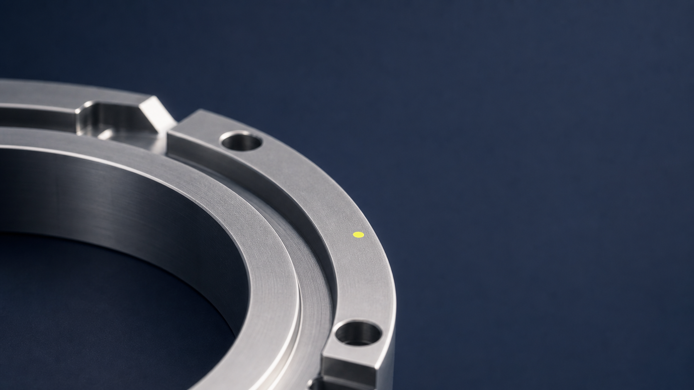
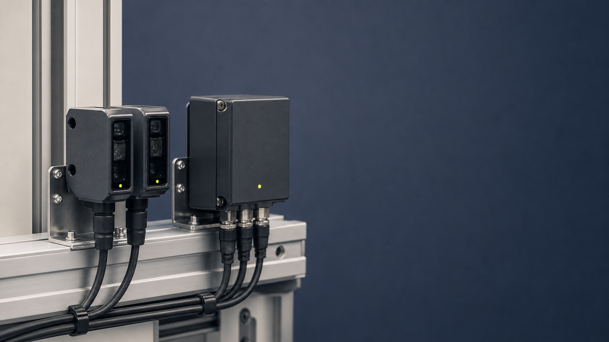
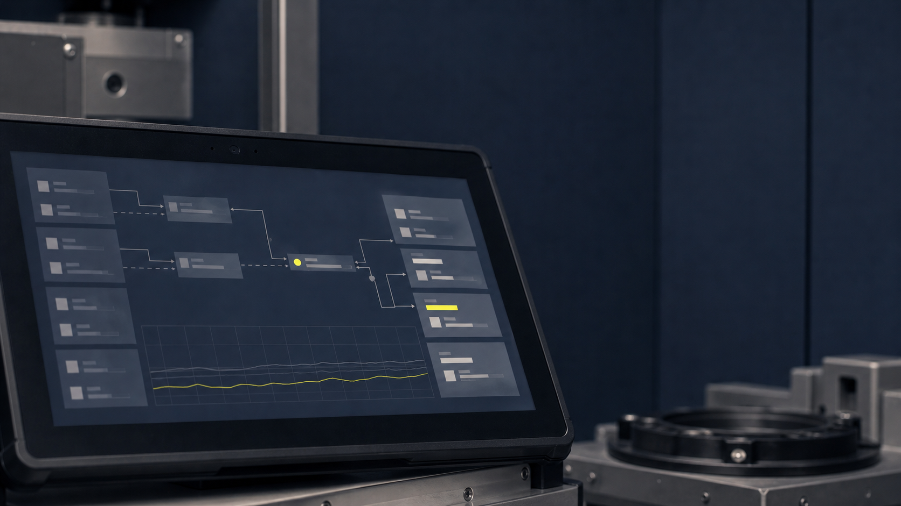
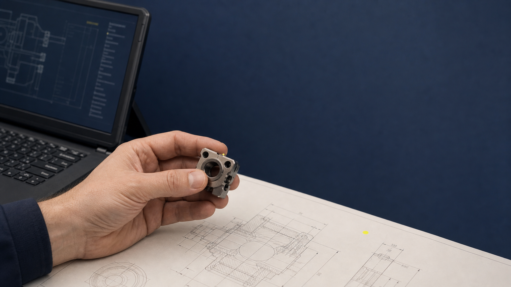
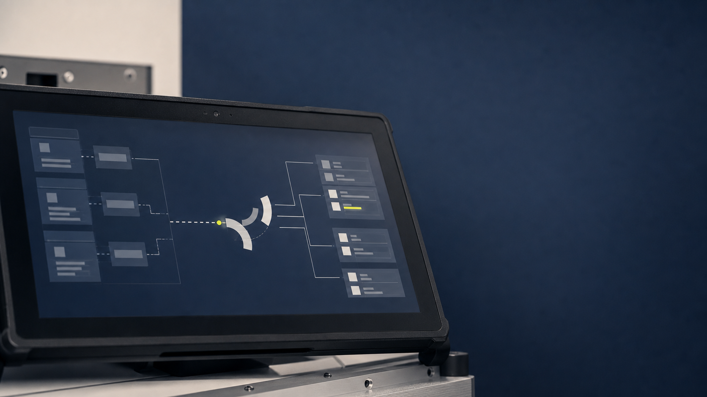

01 / Mechanik
Präzision und Material
Makros von Metall, Kanten, Gewinden, Steckern, Oberflächen. Ruhig, scharf, ohne Werkstatt-Nostalgie.
Die Marke bleibt grafisch: Raster, Quarter, Impuls. Fotos ergänzen das System dort, wo technische Wirkung sichtbar werden muss: an Maschinen, Schnittstellen, Daten und Komponenten.
Makros von Metall, Kanten, Gewinden, Steckern, Oberflächen. Ruhig, scharf, ohne Werkstatt-Nostalgie.

Sensoren, Messpunkte, kleine Hardware. Der Moment, in dem physische Prozesse datenfähig werden.

Dashboard-Ausschnitte, Messkurven, Statusanzeigen. Weniger SaaS-Show, mehr laufendes System.

Hände, Schulter, Blickrichtung, Justage. Kein Portrait-Hero, kein Meeting-Stock, kein Lächeln in Kamera.

Ein gefräster Ring liefert die mechanische Analogie, ohne das Quarter-System zu illustrieren.

Sensoren und Gateway zeigen den Uebergang von physischem Prozess zu digitalem Signal.

Ein reales Display als Anker, abstrakte Module als Hinweis auf laufende Architektur.

Der Mensch bleibt fragmentarisch sichtbar: Hand, Bauteil, Plan, technische Kontrolle.

Der helle Hintergrund macht die Materialkante sachlicher und laesst mehr Raum fuer Typografie.

Sensorik bleibt technisch, wirkt aber weniger schwer und besser kombinierbar mit Cream-Seiten.

Ein reales Display traegt die Software-Ebene, der Hintergrund bleibt hell und unaufgeregt.

Die helle Variante wirkt naeher, bleibt aber bei Hand, Bauteil und Entscheidung statt Portrait.
Nah, flach, hohe Schaerfe. Oberflaeche zeigt Toleranz und Material. Hintergrund Slate oder neutral dunkel.
Kleiner Yellow-Marker als Overlay oder realer Statuspunkt. Keine Fabrik-Totale, keine Unordnung.
Ausschnitt statt ganzes Dashboard. Keine lesbaren Kundendaten. Fokus auf Rhythmus, Kurve, Status.
Stecker, Port, Hand, klare Linie. Zeigt Uebergang von Maschine zu Software ohne Metaphernschwere.
Drei Ebenen: physisches Teil, technische Skizze, digitale Kontrolle. Mensch nur fragmentarisch sichtbar.
Kein Drama, keine roten Alarme. Laufendes System, stabile Anzeige, kleine aktive Markierung.
